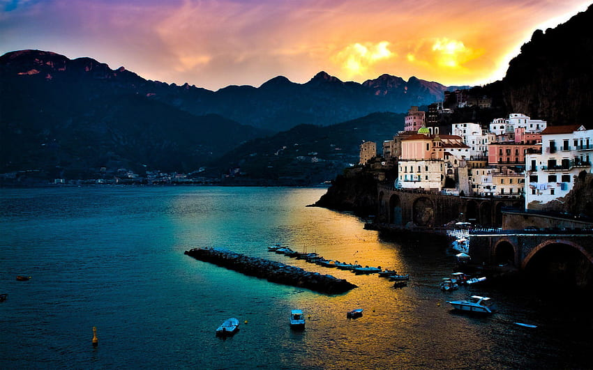
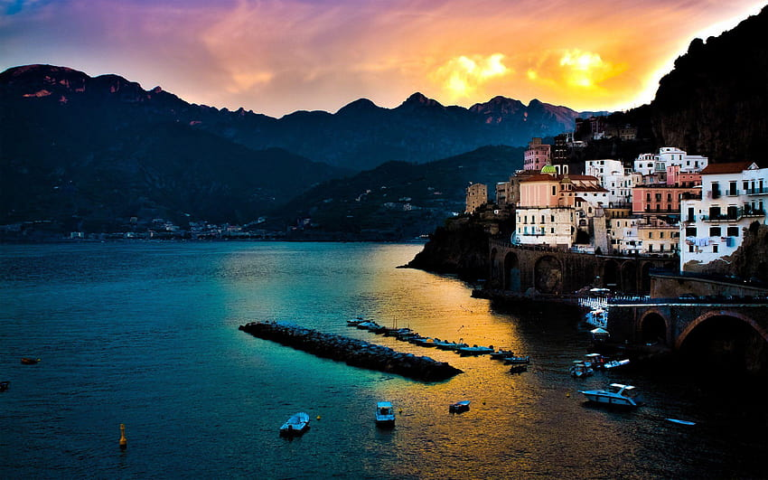

프랑스 필수 코스!
프랑스 곳곳을 여행하다 보면 "아, 여기서 시간이 멈췄으면 좋겠다" 싶은 순간이 정말 많다고합니다.
예술과 낭만, 그리고 미식의 나라 프랑스.
물론 모든 여행지를 다 설명하진 못하지만 많은 여행자들이 평생 잊지 못한다고 입을 모으는, 절대 실패 없는 세 곳(플러스 히든 스팟까지!)을 골라 소개해볼게요.
자, 그럼 첫 번째 장소부터 함께 떠나볼까요?
첫 번째로 소개할 곳은… 로마의 트레비 분수!⛲

로마에 왔다면 무조건! 꼭 들러야 하는 명소죠.
트레비 분수는 단순히 예쁜 분수가 아니라, 소원을 담아 동전을 던지는 특별한 장소예요.🪙
- "뒤로 돌아 오른손으로 동전을 던지면 다시 로마에 올 수 있다는 전설⭐"
- "바로크 양식 조각들이 만들어내는 웅장한 분위기🏛️"
- "밤에는 조명이 켜져 훨씬 로맨틱해지는 매력🌆"
분수 앞에 서서 동전 한 번 던지고, 사진도 몇 장 찍어보세요.📷
“아, 진짜 로마에 왔구나!” 하는 실감이 나는 순간일 거예요.
이어서 두 번째로 소개할 곳은… 절벽 위의 낙원 아말피 코스트!🏞️
 

이탈리아 남부에서 가장 사랑받는 휴양지이자, 사진 한 장만 봐도 무조건 마음이 끌리는 곳이죠.
푸른 바다와 아기자기한 컬러 하우스가 함께 만들어내는 풍경이 정말 그림 같아요.🌈
- “포지타노, 아말피, 라벨로 등 각각의 매력이 뚜렷한 마을들🏘️”
- “절벽과 바다가 어우러진 황홀한 전경🌄”
- “바다를 바라보며 먹는 해산물 요리는 그야말로 최고🐠”
하루만 보고 떠나기엔 너무 아까운 곳이라, 여유 있게 머물며 풍경을 즐기길 추천해요.
지중해의 햇살과 바람이 왜 많은 사람들을 다시 이끌어오는지 직접 느낄 수 있을 거예요.🍂
마지막으로 소개할 곳은… 피렌체의 상징 피렌체 대성당(두오모)!🕌

피렌체를 대표하는 붉은 돔 건축물, 바로 그 두오모예요.
도시 어디서든 보이는 웅장한 모습 덕분에 피렌체 여행의 랜드마크로 자리 잡고 있죠.
- “브루넬레스키가 완성한 거대한 돔 구조🕍”
- “대리석 패턴으로 장식된 화려한 외관🏛️”
- “쿠폴라에 오르면 피렌체가 한눈에 펼쳐지는 환상적인 전망🌟”
이곳에 서 있는 것만으로도 르네상스 시대의 중심에 와 있는 듯한 기분이 들어요.
피렌체 여행에서 빠지면 절대 안 되는 핵심 스폿!입니다.
트레비 분수에서 소원을 빌고🙏,
아말피 코스트의 바람을 느끼고🍃,
피렌체 대성당 아래서 시간을 잠시 멈춰보는 여행⌛.
이 세 곳만으로도 이탈리아의 매력을 충분히 느낄 수 있을 거예요.